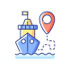

Ship Tracking
Filters
Jenis Kapal:
Semua
Kargo
Tanker
Penumpang
Ikan
Pemilik Kapal:
Semua
Kapal Global
Stasiun Pesisir
SAR Udara
Radio Penyelam
Navigasi
Kapal Pendukung
AIS SART
Perangkat MOB
Beacon Darurat
Kecepatan (Knots):
Status:
Semua
Berlayar
Berlabuh
Negara Asal:
Cari
Weather
Weather Layers
None
Wind
Temperature
Precipitation
Color Scale
Wind:
Weak
Strong
Temperature:
Cold
Hot
Precipitation:
Light
Heavy
Measure Distance
Search